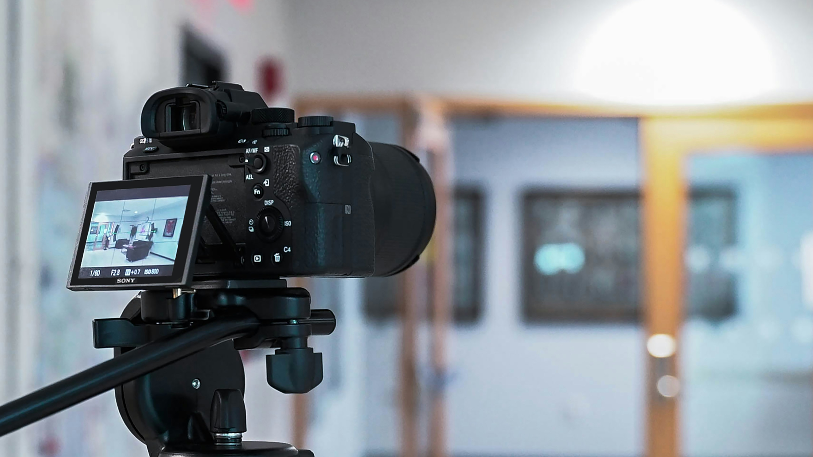

Kembali ke Halaman Utama
Materi Content Creator
Seni merencanakan, membuat, dan mendistribusikan konten yang menarik di platform digital.
Perencanaan & Ideasi Konten
Tahap awal yang krusial di mana ide-ide dikembangkan dan strategi disusun. Tanpa perencanaan yang matang, konten akan sulit mencapai target audiens yang tepat.
Elemen Kunci:
- Riset Audiens: Memahami siapa yang akan menikmati konten Anda.
- Analisis Tren: Mencari topik yang sedang populer dan relevan.
- Kalender Editorial: Menjadwalkan kapan konten akan dibuat dan dipublikasikan.
- Penentuan Tujuan: Menetapkan apa yang ingin dicapai dengan konten tersebut (misal: edukasi, hiburan).

Produksi & Eksekusi
Proses mengubah ide menjadi sebuah karya nyata, baik itu tulisan, video, gambar, maupun audio. Kualitas produksi sangat mempengaruhi persepsi audiens.
Keterampilan yang Dibutuhkan:
- Penulisan (Copywriting): Membuat naskah atau artikel yang menarik.
- Desain Grafis: Membuat visual pendukung menggunakan alat seperti Canva atau Adobe Photoshop.
- Videografi & Editing: Mengambil gambar dan menyunting video menggunakan Adobe Premiere, CapCut, atau lainnya.
- Audio Recording: Merekam suara yang jernih untuk podcast atau voice-over.
MODUL PEMBELAJARAN 1
Materi Tambahan (PDF)
Klik tombol di bawah untuk membuka materi lengkap dalam format PDF di tab baru.
Buka Materi PDF